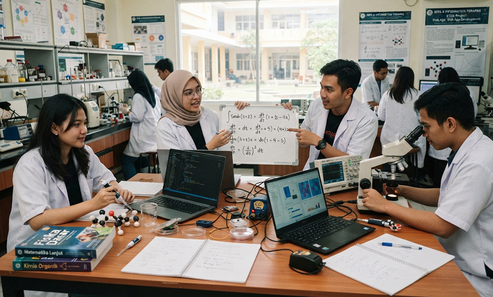
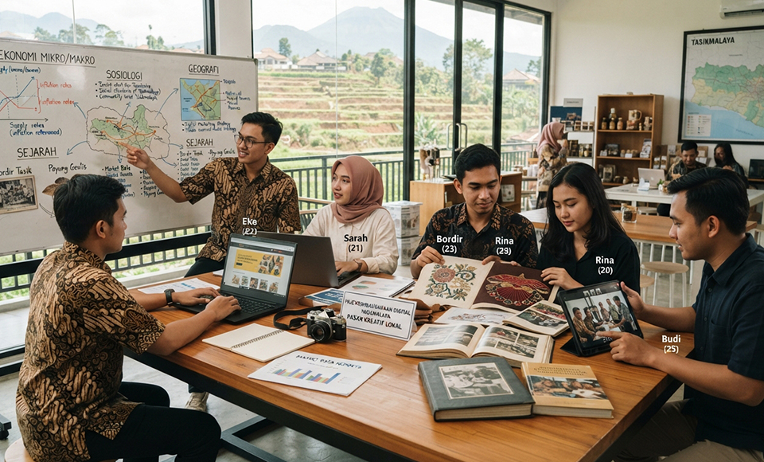
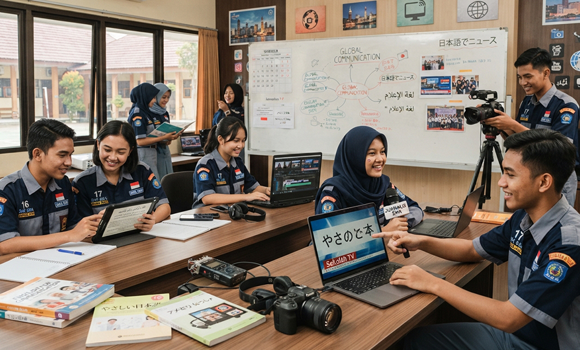
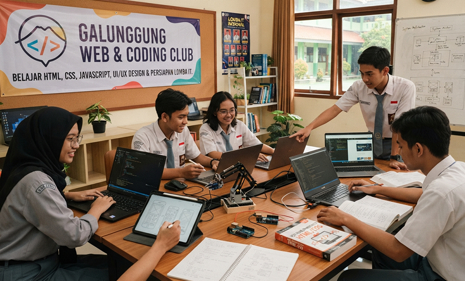
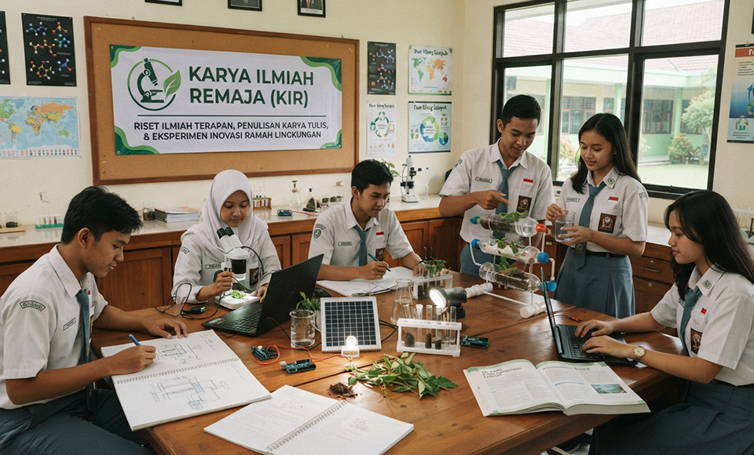
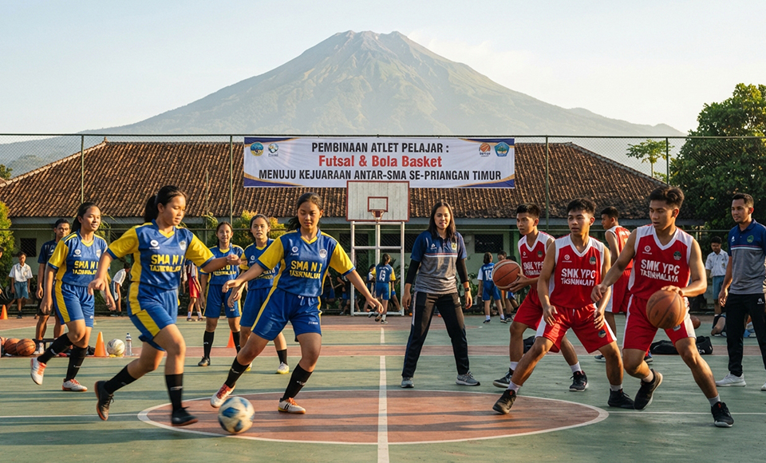
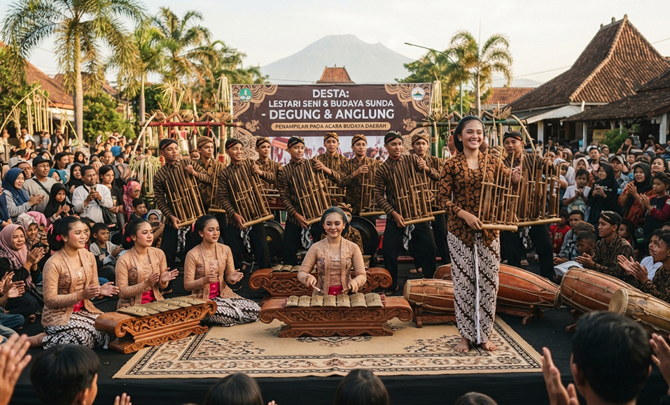
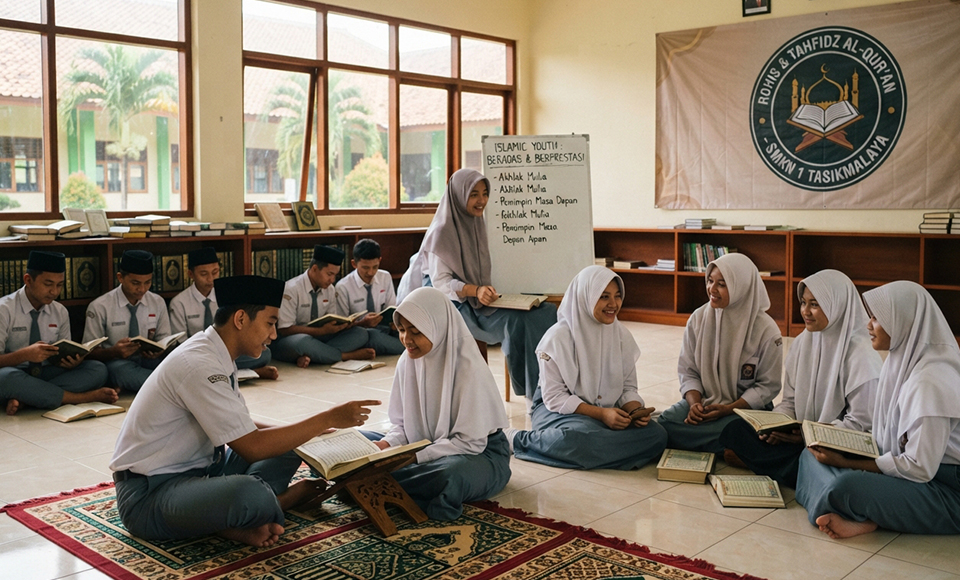

Siswa kelas XI dan XII dapat memilih paket mata pelajaran sesuai minat studi lanjut di perguruan tinggi.

Fokus pada penguatan Matematika Tingkat Lanjut, Fisika, Kimia, Biologi, serta Informatika & Pemrograman Web.
Prospek: Teknik Informatika, Kedokteran, Sains Data, Teknik Sipil.

Mendalami Ekonomi Mikro/Makro, Sosiologi, Geografi, Sejarah, serta praktik bisnis kreatif lokal Tasikmalaya.
Prospek: Manajemen Bisnis, Akuntansi, Ilmu Hukum, Hubungan Internasional.

Penguasaan Bahasa Inggris Lanjut, Bahasa Jepang, Bahasa Arab, serta literasi media dan jurnalistik sekolah.
Prospek: Sastra Asing, Ilmu Komunikasi, Pariwisata Global, Pendidikan.

Belajar HTML, CSS, JavaScript, UI/UX Design, dan persiapan lomba IT tingkat provinsi/nasional.

Riset ilmiah terapan, penulisan karya tulis, dan eksperimen inovasi ramah lingkungan.

Melatih kedisiplinan, kepemimpinan, baris-berbaris, dan kepanduan aktif di Kwarcab Kota Tasikmalaya.

Pembinaan atlet pelajar untuk kejuaraan antar-SMA se-Priangan Timur.

Pelestarian seni musik tradisional Jawa Barat dan penampilan pada acara budaya daerah.

Kajian remaja muslim, pembinaan tilawah, dan program hafalan juz pilihan.
| Bulan / Periode | Kegiatan Akademik | Keterangan |
|---|---|---|
| Juli 2026 | Masa Pengenalan Lingkungan Sekolah (MPLS) & Awal Semester Ganjil | Wajib bagi seluruh siswa baru kelas X |
| September 2026 | Penilaian Tengah Semester (PTS) Ganjil & Pekan Proyek P5 | Berbasis ujian digital (CBT) |
| November – Desember 2026 | Penilaian Akhir Semester (PAS) Ganjil & Pembagian Rapor | Dilanjutkan Pekan Olahraga & Seni (PORSENI) |
| Januari 2027 | Awal Semester Genap & Try Out Akbar SNBT Kelas XII | Kerja sama dengan lembaga bimbingan belajar |
| Mei – Juni 2027 | Asesmen Sumatif Akhir Tahun & Pelepasan Siswa Kelas XII | Bertempat di Aula Utama Sekolah |